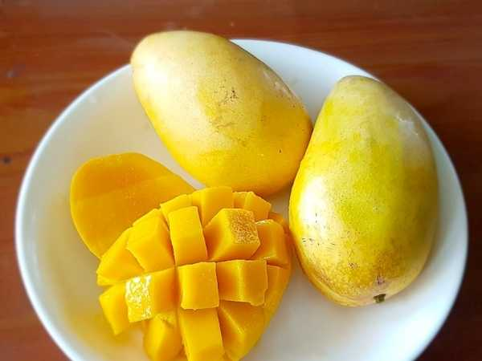

Mangifera indica 'All Season'
Common Names: All Season Mango, Sadabahar Mango, Everbearing Mango, 12-Month Mango
Local Name: Sadabahar Aam (Hindi), Barahmasi Mango
Family: Anacardiaceae
Origin: India (selected from natural everbearing seedlings)
Plant Type: Perennial evergreen tree
Variety: All Season — everbearing type that flowers and fruits 2–3 times per year
Average Lifespan: 30–60+ years
| Growth Habit | Compact to medium-sized tree with moderately dense, rounded canopy; vigorous new growth flushes |
| Plant Size | 5–8 meters tall; canopy spread 4–7 meters |
| Leaves | Simple, alternate, lanceolate, 12–22 cm long; new leaves pinkish-bronze turning dark green |
| Flowers | Small, yellowish-white in terminal panicles (15–25 cm long); flowers multiple times per year |
| Flower Characteristics | Both male and bisexual flowers; does not require prolonged dry period to initiate flowering |
| Fruit | Medium, oval to oblong, 180–300 g; moderately thick skin with sweet, mildly fibrous pulp |
| Fruit Color | Green turning yellow-orange when ripe; occasional red blush |
| Seed Characteristics | Medium polyembryonic seed; produces true-to-type seedlings |
| Root System | Moderate taproot with lateral roots; suitable for container growing |
| Climate | Tropical to subtropical; uniquely does not require dry period for flowering |
| Temperature Range | 22–35°C ideal; tolerates up to 42°C; frost-sensitive below 3°C |
| Rainfall Requirement | 800–2500 mm annually; tolerates year-round moisture better than most mangoes |
| Soil Type | Well-drained loamy soil; adaptable to various soil types |
| Soil pH Preference | 5.5–7.5 |
| Sun Requirement | Full sun (6+ hours daily) |
| Spacing | 5–7 meters between trees (compact variety) |
| Irrigation Method | Drip irrigation; consistent moisture supports year-round fruiting |
| Water Requirement | Moderate to high; needs regular watering to sustain multiple fruiting cycles |
| Can it Grow in Pots? | Yes, excellent container variety in 40+ liter pots; compact growth habit ideal for terraces |
| Fertilizer Schedule | Every 2–3 months year-round to support continuous fruiting |
| Recommended Organic Fertilizers | FYM (15–30 kg/tree/year), vermicompost, neem cake, bone meal, seaweed extract |
| Pesticide Frequency | 3–4 sprays per year (more frequent due to year-round fruiting) |
| Recommended Organic Pesticides | Neem oil, panchagavya, garlic-chili spray, fruit fly traps year-round |
| Mulching Practice | Organic mulch around base year-round; replenish every 3–4 months |
| Training System | Open center or modified central leader; maintain compact form |
| Pruning Time | Light pruning after each harvest cycle; major pruning in monsoon |
| How to Prune | Tip-prune spent fruiting branches; remove dead and crossing branches; maintain airflow |
| Common Pests | Mango hopper, fruit fly, mealybug, thrips, leaf miner |
| Common Diseases | Anthracnose, powdery mildew, bacterial canker, sooty mold |
| Disease Prevention & Remedies | Copper fungicides, good air circulation, remove infected parts promptly, fruit bagging |
| Flowering Months | Multiple flushes: Oct–Nov, Feb–Mar, Jun–Jul (2–3 cycles per year) |
| Fruiting Season | Nearly year-round; main crop Apr–Jun, off-season crops Aug–Oct and Dec–Feb |
| Days to Harvest | 90–110 days from flowering per cycle |
| Harvest Indicators | Skin turns yellow-orange, fruit gives slightly to pressure, sweet aroma at stem end |
| Average Yield per Plant | 100–200 fruits per tree per year (across all cycles); no alternate bearing |
| Pollination Type | Cross-pollination by insects; some self-fertility |
| Pollination Notes | Year-round flowering attracts diverse pollinators; fruit set varies by season |
| Pollination Details | Insect-pollinated; flies and bees active year-round in tropical climates |
| Propagation by Seeds | Polyembryonic; seedlings come reasonably true-to-type; viable propagation method |
| Propagation by Cuttings | Air layering possible; roots in 2–3 months |
| Propagation by Grafting | Veneer grafting on vigorous rootstock for faster fruiting (preferred commercial method) |
| Water Usage | Moderate; needs consistent moisture for year-round production |
| Soil Conservation Practices | Root system prevents erosion; continuous leaf litter enriches soil |
| Organic Practices Used | Panchagavya, jeevamrutha, vermicompost, organic mulching |
| Companion Plants | Leguminous cover crops, marigold (pest deterrent), basil |
| Biodiversity Benefits | Year-round flowering provides continuous food source for pollinators |
| Commercial Production Regions | India (Bihar, UP, Maharashtra), Bangladesh, Southeast Asia |
| Market Uses | Fresh table fruit, off-season mango supply, home garden variety |
| Processing Uses | Mango juice, pulp, pickle, dried mango |
| Market Value (Approx.) | ₹80–200 per kg; premium pricing during off-season (Oct–Feb) |
| Symbolism | Represents abundance and year-round prosperity; popular in home gardens |
| Traditional Uses | Provides fresh mangoes for festivals throughout the year; leaves used in ceremonies |
| Calories | 60 kcal per 100g |
| Dietary Fiber | 1.6 g per 100g |
| Vitamin C | 36 mg per 100g |
| Vitamin A | 1082 IU per 100g |
| Iron | 0.16 mg per 100g |
| Potassium | 168 mg per 100g |
| Antioxidants | Rich in beta-carotene, mangiferin, quercetin |
| Other Key Nutrients | Folate, vitamin B6, copper, vitamin E |
| Anxiety & Sleep | Not a primary use for mango |
| Immune Support | High vitamin C and A content boosts immunity |
| Anti-inflammatory Properties | Mangiferin compound shows anti-inflammatory and antioxidant effects |
| Heart Health | Fiber and potassium support cardiovascular health |
| Digestive Health | Enzymes like amylase aid digestion; fiber promotes gut health |
Disclaimer: Information provided is for educational purposes only and not a substitute for medical advice.
Add your field observations here.